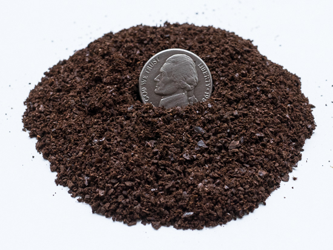
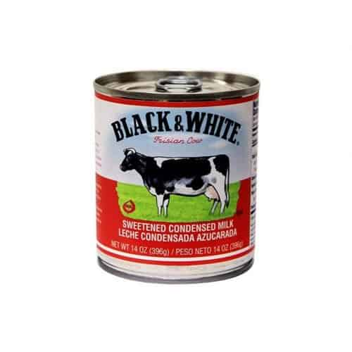
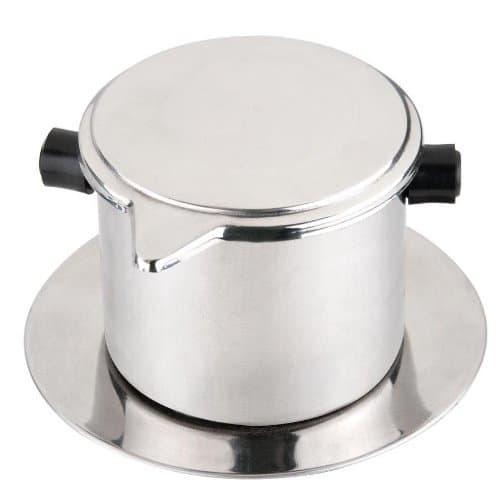
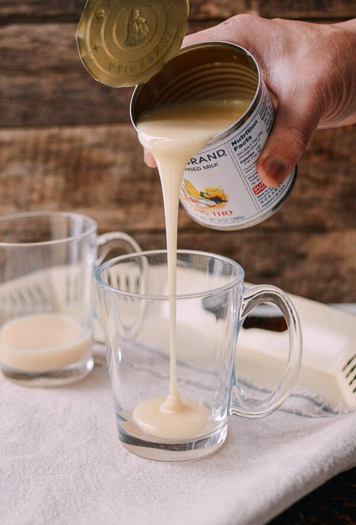
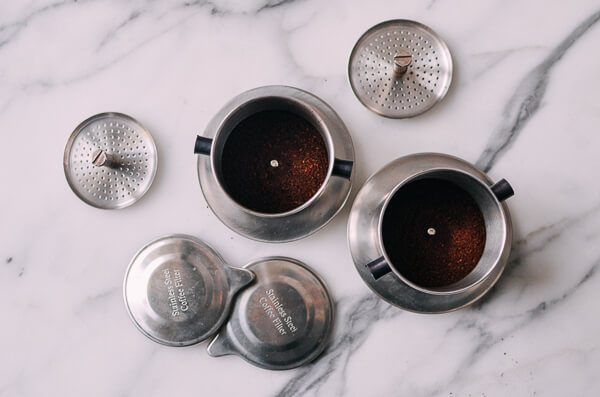
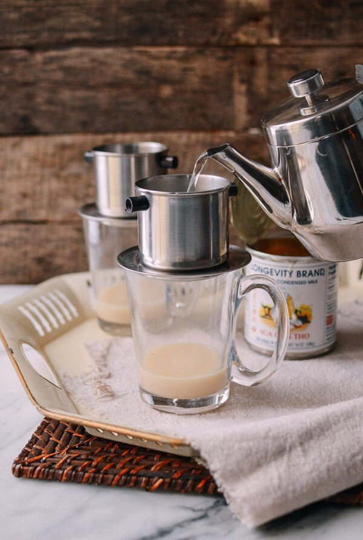
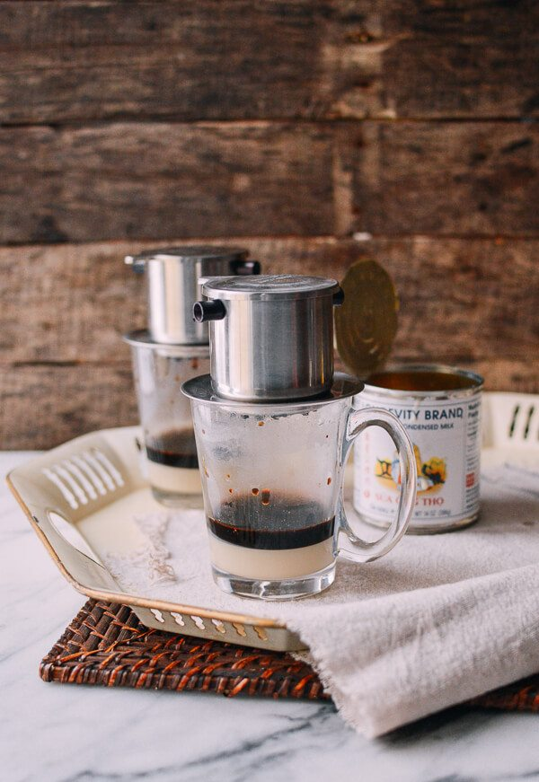
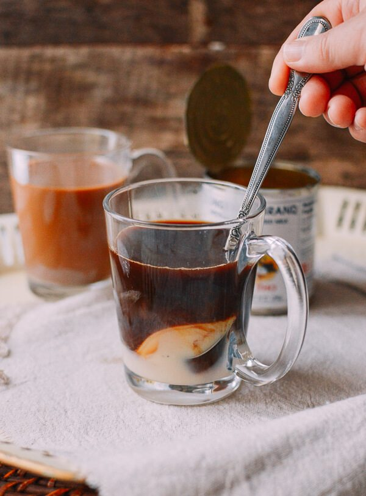
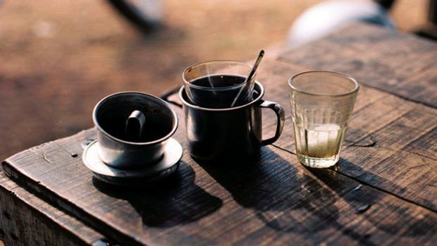

Vietnamese Coffee has a really strong taste. Its taste is so strong that just taking a sip of it, you will never want to go to sleep even once during your day. No matter whether you had a bad sleep last night, a cup of Vietnamese Coffee will help you start your new day energetically!
What do you need?
- Medium coarse grind coffee

- Sweetened condensed milk

- Vietnamese coffee press

How do you make?
- Add 2 tablespoons of sweetened condensed milk to a glass

- Add 2 tablespoons of ground coffee to the base of the coffee press. Wet the grounds just a little bit with some hot water. Screw on the press tight. The coffee should be packed well.

- Pour boiled hot water into the coffee press. Then cover with its little hat.

- Wait. It will drip very slowly. It takes 3-5 minutes to finish brewing.

- Once it’s finished, stir well.

- Enjoy your Vietnamese Coffee!
